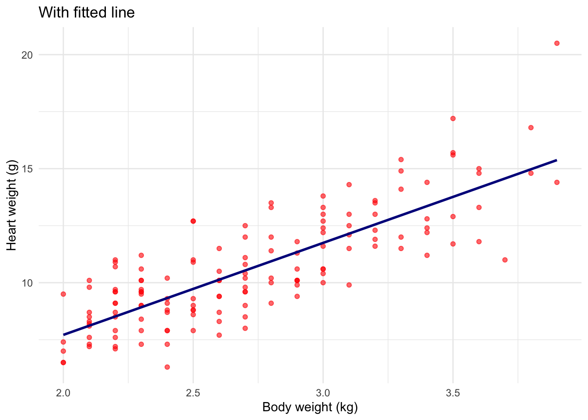

Gemini figure (use with caution - notice where the small cat is positioned)
Consider a simple example in which you have measurements of body weight and heart weight for a sample of cats.
NoteExample: cat’s body weight and heart weight
Assume we are interested to know whether a cat’s body weight and heart weight are associated, specifically, whether bigger cats tend to have bigger hearts.
The scatterplot suggests a general linear trend. In fact, we see a positive association between body weight and heart weight, indicating that the heavier the body, the heavier the heart. Then it is natural to try to describe the strength of the linear association. One way to measure such strength of linear association is with the correlation coefficient defined as follows:
\[
r=\frac{1}{n-1}\sum^{n}_{i=1}\left(\frac{x_{i}-\bar{x}}{s_{x}} \right)\left(\frac{y_{i}-\bar{y}}{s_{y}} \right)
\] The correlation coefficient is unit free and always between -1 and 1. The sign of the correlation indicates the sign of the relationship. In our example
cor(cats$Bwt,cats$Hwt)
[1] 0.8041274
which confirms the positive linear association.
Things to remember:
Our correlation is based on a sample, therefore we obtain a sample correlation and it is an estimate of the population correlation (often denoted by \(\rho\) (Greek letter rho).
Any observed association between two variables does not imply causal connection between them.
Given that in our example we observe a clear linear relationship between body weight and heart weight, we can superimpose a line on the plot. This is called the least-squares line or fitted regression line of \(Y\) on \(X\).

We will now learn how to find and interpret the line that best summarizes their linear relationship.
Linear Regression
Linear regression is a machine learning and statistical method that has been widely used for a long time to predict quantitative continuous responses. Although relatively simple, it is a very important model for understanding more complex machine learning models, which can be seen as generalizations of it.
Formally, suppose we want to understand how one or more variables — called predictors — relate to an outcome of interest — called the response variable. In our example, body weight (\(X\)) is the predictor and heart weight (\(Y\)) is the response. A few key questions naturally emerge:
Is there a relationship between body weight and heart weight?
How strong is that relationship?
How large is the effect — for each additional kilogram of body weight, how many grams does the heart weight increase?
How accurately can we predict heart weight from body weight?
Is the relationship linear, or does it follow a more complex pattern?
When multiple predictors are available — such as body weight, sex, and age — which ones are truly associated with heart weight, and is there any interaction among them?
Linear regression allows us to address all of these questions in a rigorous and interpretable way. And while our example is biological, the same framework applies broadly — from medicine and ecology to economics and engineering.
Simple Linear Regression
Simple linear regression refers to the most basic model when there is only one predictor, \(X\), and how that predictor is linearly related to a specific outcome, \(Y\). Mathematically, this linear relationship is modeled as follows:
\[Y\approx \beta_{0} + \beta_{1}X. \tag{1}\]
Equation 1 is interpreted as we are regressing \(Y\) on \(X\), and \(\beta_{0}\), and \(\beta_{1}\) are model coefficients or parameters of the model.
\(\beta_{0}\) represent the intercept
\(\beta_{1}\) the slope in the linear model.
The main objective of linear regression is to use training data (in the previous example, \(X\) represents measures of body weight for the sample of cats, and \(Y\) observations of heart weight), to produce estimates \(\hat{\beta}_{0}\) and \(\hat{\beta}_{1}\) for the model coefficients that better approximate the relationship between the predictor and outcome. That is:
Notice that the intercept is equal to \(-0.3567\), which we can ignore as it is negative and has no biological meaning (heart weight when body weight = 0). The slope is important in this model, because indicates that for every 1 kg increase in body weight, heart weight increases by about 4 grams.
In summary, body weight is a strong positive predictor of heart weight in cats. Larger cats tend to have proportionally heavier hearts.
summary(model1)
Call:
lm(formula = Hwt ~ Bwt, data = cats)
Residuals:
Min 1Q Median 3Q Max
-3.5694 -0.9634 -0.0921 1.0426 5.1238
Coefficients:
Estimate Std. Error t value Pr(>|t|)
(Intercept) -0.3567 0.6923 -0.515 0.607
Bwt 4.0341 0.2503 16.119 <2e-16 ***
---
Signif. codes: 0 '***' 0.001 '**' 0.01 '*' 0.05 '.' 0.1 ' ' 1
Residual standard error: 1.452 on 142 degrees of freedom
Multiple R-squared: 0.6466, Adjusted R-squared: 0.6441
F-statistic: 259.8 on 1 and 142 DF, p-value: < 2.2e-16
Goodness of fit: R-squared = 0.64 - indicates that body weight explains 64% of the total variation in heart weight.
p-value < 2.2e-16 - indicates that the relationship is statistically significant.
Residual standard Error: 1.452g - indicates how far off predictions typically are (we are typically wrong by about 1.42 grams)
Estimating the coefficients
The coefficients \(\beta_{0}\) and \(\beta_{1}\) in the linear model are unknown. The goal is therefore to obtain estimates \(\hat{\beta}_{0}\) and \(\hat{\beta}_{1}\) such that the linear model Equation 1 fits the \(n = 144\) data points as closely as possible.
There are several ways to measure closeness, however the most common approach involves minimizing the least squares criterion.
In least squares, we calculate the difference between the observed value \(y_{i}\) and the predicted value \(\hat{y}_{i}\) obtained from the fitted model (from Equation 2 above: \(\hat{y}_{i} = \hat{\beta}_{0} + \hat{\beta}_{1}x_{i}\)). That is, \(e_{i} = y_{i} - \hat{y}_{i}\) represents the i-th residual for observation \(i\). We illustrate these residuals for the \(cats\) sample in the plot below, shown as vertical lines from each observed data point (in red) to the fitted line.
Then, we define the residual sum of squares (RSS) as:
The least squares coefficient estimates\(\hat{\beta}_{0}\) and \(\hat{\beta}_{1}\) for simple linear regression are obtained by minimizing the RSS, which after some calculus yields:
where \(\bar{y}\equiv \frac{1}{n}\sum_{i=1}^{n}y_{i}\) and \(\bar{x}\equiv \frac{1}{n}\sum_{i=1}^{n}x_{i}\) are the sample means.
Assessing the accuracy of the coefficient estimates
A natural question about the linear regression model is how accurate the coefficient estimates are — that is, how far \(\hat{\beta}_{0}\) and \(\hat{\beta}_{1}\) are from the true values \(\beta_{0}\) and \(\beta_{1}\). To answer this question, we compute the standard errors associated with \(\hat{\beta}_{0}\) and \(\hat{\beta}_{1}\) using the following formulas:
where \(\sigma^{2}=Var(\epsilon)\) is the variance of the error terms, which is unknown but can be estimated empirically via the RSE defined as follows:
\[
RSE=\sqrt{\frac{RSS}{n-2}}
\]
Strictly, these equations are valid only when the errors \(\epsilon_{i}\) for each observation have constant variance \(\sigma^{2}\) and are uncorrelated, but in practice they provide a good approximation.
Notice that unlike \(e_{i}\), which are the observed residuals obtained from the fitted model, \(\epsilon_{i}\) are the underlying population errors that arise when approximating the relationship between \(X\) and \(Y\) through a linear model, and are therefore unobserved.
Once we obtain the standard errors of the estimates, we can construct confidence intervals. A 95% confidence interval is defined as a range of values such that, with 95% probability, the range will contain the true unknown value of the parameter. Confidence intervals are constructed from the data and have the property that if we take repeated samples and construct a confidence interval for each sample, 95% of those intervals will contain the true unknown value of the parameter. For the linear regression model, the 95% confidence intervals for \(\beta_{0}\) and \(\beta_{1}\) are approximated as:
In the previous example, the standard errors for the intercept and slope were 0.6923 and 0.2503, respectively. The associated confidence intervals are therefore:
We are thus 95% confident that for every 1 kg increase in body weight, the true average increase in heart weight is between 3.54 and 4.53 grams.
Standard errors are also useful for testing the most common hypothesis in regression — that there is no relationship between \(X\) and \(Y\) (i.e., that a cat’s body weight is not associated with its heart weight). Formally, the null hypothesis states that there is no relationship between \(X\) and \(Y\), versus the alternative hypothesis that there is some relationship between \(X\) and \(Y\). Mathematically, this corresponds to testing:
To test the null hypothesis, we need to determine how far \(\hat{\beta}_{1}\) is from zero to be confident that \(\beta_{1}\) is nonzero. This depends on the accuracy of the estimate, given by \(SE(\hat{\beta}_{1})\). The smaller \(SE(\hat{\beta}_{1})\) is, the more likely that \(\beta_{1}\) differs from zero; conversely, the larger the standard error, the larger \(\hat{\beta}_{1}\) needs to be in order to reject the null hypothesis. In practice, we rely on a t-statistic, given by
which measures how many standard deviations \(\hat{\beta}_{1}\) is from zero. If there is no relationship between \(X\) and \(Y\), we expect \(t\) to follow a \(t\)-distribution with \(n-2\) degrees of freedom. The larger the observed value of \(t\) relative to the theoretical \(t\)-distribution, the lower the probability that \(\beta_{1} = 0\). This probability is called the p-value, which in our example was practically zero (\(<2\times10^{-16}\)), providing strong evidence that \(\hat{\beta}_{1} \neq 0\), or equivalently that it is statistically significant. A small p-value indicates that it is unlikely to observe such a substantial association between the predictor and the response by chance alone. We therefore reject the null hypothesis when the p-value is sufficiently small — typically below 0.05 or 0.01.